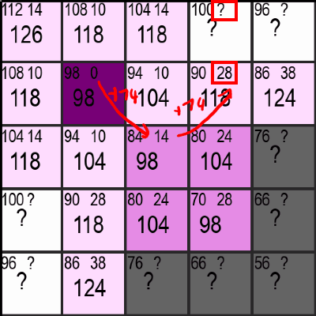

A*-Pathfinding
If you don't know the A*-Pathfinding Algorithm (pronounced "A-Star"), it's an Algorithm to find the shortest path between two points.
It has a multitude of applications, the most notible being of course car navigation systems or navigation from A to B in any network (with possibly weighted edges) and it works similar to Dijekstra's Algorithm↗.
Out of interest, I reprogrammed it myself in python and made a Youtube-Video↗ about it explaining the rough outlines.
The Algorithm
Here's a demo of how the algorithm is supposed to work. I'll explain what the numbers and all that mean in the following Section:
In the upper gif you can see the violet starting-point and the green end-point. When using the A*-Algorithm, it is necessary for us to know the location of the end-point and there can only ever be one end-point. We don't have those limitations with the Dijekstra-Algorithm, but on the flipside the A*-Algorithm is often much faster, especially when the distance between start and end becomes very large.
So about the numbers: In every square of the maze you can see three numbers. Two at the top and a larger one at the bottom which, as you might have already noticed, equates to sum of the upper two - nothing magical so far.
You can also notice that the upper left number is already precomputed for every square and decreases with the squares distance to the endpoint. And thats exaclty what this first number indicates. It is equal to the optimal distance from that square to the endpoint meaning the distance if there were no walls (the grey squares) in the way.
Calculating the Distance-Estimate to the Endpoint
I've set the distance from one square horizontally or vertically to the next equal to 10 and a diagonal has a distance of sqrt(2)*10 ≈ 14. If you now have the coordinates of the first square (x1, y1) and the coordinates of the end-square (x2, y2), you can get the shortest possible distance (the estimate) as follows:
def getDistanceEstimate(square, end): delta_x = abs(end.x - square.x) delta_y = abs(end.y - square.y) diagonals = min(delta_x, delta_y) straights = abs(delta_x - delta_y) return diagonals * 14 + straights * 10Note: The estimation-function is problem-specific. Because this is a special case of a Pathfinding-Problem, it is possible to estimate it exactly. The A*-Algorithm is only guranteed to return the shortest path possible if the estimation function never over-estimates the distance.
Here, we first calculate the absolute difference between the square and the endpoint (meaning the distance in x and in y, which is a non-negative number). After that, we can recall that moving along a diagonal and getting one square closer in the x- and y-direction is more efficient that going two seperate steps in the x- and then the y-direction (14 < 10 + 10), so we always want to move along a diagonal (as long as it makes sence and we can't get to the goal by only moving vertically or horizontally).
The number of diagonals we need to take is now simply the minimum of the difference in x- and in y-direction, as that's the number of steps before we are either in a horizontal or vertical line with the end and it doesn't make sence to move diagonally anymore.
We can then calculate the remaining number of straights we need to take by subtracting the number of diagonals we just determined from the bigger of the two differences (max(difference_x, difference_y) - diagonals) which simplifies to just taking the absolute distance of the two.
Finally, we can return the number of diagonals and straights multiplied with their corresponding distance-values of 14 and 10.
What about the other Number?
If you remember, there was a second number (or questionmark) at the top right of every square. Similar to the number at the top-left, this number represents the currently best available distance to the starting-point. Unlike the estimate for the distance to the end though, this number is not precomputed but is slowly discovered by the algorithm and updated when a shorter route is found. More on that in the following section.
Discovering new Squares
Let's now look at the core part of the algorithm: Choosing which Squares to discover. But first I have to explain what it means to "discover" a square.
In the gif at the top you have probably already noticed that there are squares that are pink and ones that are a light lavender which is close to white. Additionally, you may notice that the lavender squares are alway next to pink (or the start-violet) ones. This can be easily explained by the fact that the lavender squares represent the squares that are checkable or "discoverable" and the pink ones are the ones the algorithm has already checked/discovered.
In short, discovering a new square consists of four steps:
1. Choosing the most promising Square
The most promising Square is simply chosen by the square with the lowest total number. If there are multiply such squares, the ones whose estimated distance to the end is shorter get preferred. This leads to behaviour seen in the gif at the top, where once there is a clear path to the end, it is also taken by the algorithm without any detours.
2. Calculating/Updating the values of neighboring discoverable Squares
Once a Square has been chosen, the "distance to the start"-number (the number at the top right) needs to be updated or set for all neighbors that aren't pink yet. This is done by either adding 10 or 14 to the current "distance to the start", depending on if a neighbor is a diagonal neighbor or not. If this distance is greater than or equal to an already existing nuber for the distance to the start in that square, it simply gets ignored. Otherwise, the new shorter "distance to the start"-number is used in its place. If that sounded too complicated, just look at the gif below and see if it makes sence for yourself:

Additionally, the programm has to keep track of all the checkable/discoverable Squares, so the new lavender squares get added to a list dedicated to do exactly that.
3. Setting the Squares State to "discovered"
As long as the previous step was, as short is this one. In order for the programm to not check the same Square multiple times, the squares state is set to "Checked/Discovered" and removed from the squares-to-check-list. This also means that the squares distance to the start cannot be updated and improved anymore (which is sensible as it is guranteed to be the optimal distance at that point).
4. Repeat until the green Square is discovered
Like the heading says, those three steps now get repeated again and again until the green square is discovered. No magic here either, but still its awesome to see everything come together like this. We're still not finished though!
Retracing the path to the start
This is the final step in getting our path from the start- to the end-point. You might wonder why this is necessary: It is necessary because we didn't store the parent of each square, meaning that if a square has multiple neighbors, we don't know which one the square got its optimal "distance to the start"-value from.
There are two solutions to this problem:
1. Storing the parent for each square
This solution sounds stupid but it works. If you always store which neighbor has last set the "distance to the start"-value for the current square, you can easily get the final path by just following the links from end to start. The only drawback to this is that you have to store extra information (we're talking about less than a byte, but still) for each square.
2. Actually retracing the path
I went for this solution because I found it easier to implement at the time. You can easily retrace the path to the start by always choosing the neighbor with the lowest "distance to the start"-value. This is guranteed to give you the optimal path between start and end. Here's some code for that:
def retracePathToEnd(squares, start, end): path = [end] while (path[-1] != start): neighbors = squares.getNeighbors(path[-1]) nextSquare = getClosestSquareToStart(neighbors) path.append(nextSquare) return path.reverse()Note to readers who are less familiar with python: list[-1] refers to the last element of a list.
What now?
Now that you've (hopefully) understood how everything works, how about you:
- try to implement it yourself in a programming language of your choice
- go and read more about the formal way of describing everything and read the Wikipedia page↗ (your choice)
- or try my Code↗ and play around with it (be warned, it's a bit older)
Anyways, thanks for reading. If you've got feedback for me, why don't you contact me :)